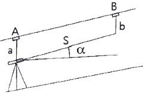
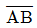

지적산업기사 (2017-03-05 기출문제)
1과목: 지적측량
1. 경위의측량방법에 따른 세부측량의 관측 및 계산 기준이 옳은 것은?
- 교회법 또는 도선법에 따른다.
- 관측은 30초독 이상의 경위의를 사용한다.
- 수평각의 관측은 1대회의 방향각관측법에 따른다.
- 연직각의 관측은 정반으로 2회 관측하여 그 교차가 5분 이내인 때에는 그 평균치로 한다.
(정답률: 54%)

2. 광파기측량방법으로 지적삼각보조점의 점간거리를 5회 측정한 결과 평균치가 2420m 이었다. 이 때 평균치를 측정거리로 하기 위한 측정치의 최대치와 최소치의 교차는 얼마 이하이어야 하는가?
- 0.2m
- 0.02m
- 0.1m
- 2.4m
(정답률: 59%)
3. 지적도근점측량에서 지적도근점을 구성하는 기준 도선에 해당하지 않는 것은?
- 개방도선
- 다각망도선
- 결합도선
- 왕복도선
(정답률: 83%)
4. 지적도 및 임야도가 갖추어야 할 재질의 특성이 아닌 것은?
- 내구성
- 명료성
- 신축성
- 정밀성
(정답률: 81%)
5. 평판측량방법에 따른 세부 측량을 교회법으로 하는 경우 그 기준으로 틀린 것은?(단, 광파조준의 또는 광파측거기를 사용하는 경우는 고려하지 않는다.)
- 전방교회법 또는 측방교회법에 따른다.
- 3방향 이상의 교회에 따른다.
- 방향각의 교각은 30도 이상 150도 이하로 한다.
- 방향선의 도상길이는 측판의 방위표정에 사용한 방향선의 도상길이 이하로서 30m 이하로 한다.
(정답률: 62%)
6. 다각망도선법에 따르는 경우, 지적도근점표지의 점간거리는 평균 얼마 이하로 하여야 하는가?
- 500m
- 300m
- 100m
- 50m
(정답률: 67%)
7. 다각망도선법에 의하여 지적삼각보조측량을 실시할 경우 도선별 각오차는?
- 기지방위각-산출방위각
- 출발방위각-도착방위각
- 평균방위각-기지방위각
- 산출방위각-평균방위각
(정답률: 60%)
8. 경위의측량방법으로 세부 측량을 시행할 때 관측 방법으로 옳은 것은?
- 교회법･지거법
- 도선법･방사법
- 방사법･교회법
- 지거법･도선법
(정답률: 69%)
9. 앨리데이드를 이용하여 측정한 두 점 간의 경사거리가 80m, 경사분획이 +15.5일 때, 두 점 간의 수평거리는?
- 약 78.0m
- 약 79.1m
- 약 79.5m
- 약 78.5m
(정답률: 60%)
10. 지적측량 중 기초측량에서 사용하는 방법이 아닌 것은?
- 경위의측량방법
- 평판측량방법
- 위성측량방법
- 광파기측량방법
(정답률: 69%)
11. 지적 세부측량에서 광파조준의를 이용한 교회법을 실시할 경우 도상길이는 얼마이하인가?
- (1/50)M(M : 축척분모수)
- 5cm
- 10cm
- 30cm
(정답률: 66%)
12. 교회법으로 측점의 위치를 결정할 때 베셀법은 다음 중 어느 경우에 사용되는가?
- 후방교회 시
- 측방교회 시
- 전방교회 시
- 원호교회 시
(정답률: 58%)
13. 구소삼각점인 계양원점의 좌표가 옳은 것은?
- X＝200000m, Y＝500000m
- X＝500000m, Y＝200000m
- X＝20000m, Y＝50000m
- X＝0m, Y＝0m
(정답률: 71%)
14. 삼각형의 세 변을 측정한바 각 변이 10m, 12m, 14m이었다. 이 토지의 면적은?
- 52.72m2
- 54.81m2
- 55.26m2
- 58.79m2
(정답률: 63%)
15. 지적도근점의 설치와 관리에 대한 설명이 틀린 것은?
- 영구표지를 설치한 지적도근점에는 시행지역별로 일련번호를 부여한다.
- 지적도근점에 부여하는 번호는 아라비아 숫자의 일련번호를 사용한다.
- 지적도근점의 표지는 소관청이 직접 관리하거나 위탁 관리한다.
- 지적도근측량을 하는 때에는 미리 지적도근점 표지를 설치하여야 한다.
(정답률: 49%)
16. 오차의 부호와 크기가 불규칙하게 발생하여 관측자가 아무리 주의하여도 소거할 수 없으며, 오차 원인의 방향이 일정하지 않은 것은?
- 착오
- 정오차
- 우연오차
- 누적오차
(정답률: 84%)
17. 지적측량 시행규칙에 의한 면적측정의 대상이 아닌 것은?
- 축척변경을 하는 경우
- 지적공부의 복구 및 토지합병을 하는 경우
- 도시개발사업 등으로 인해 토지의 표시를 새로 결정하는 경우
- 경계복원측량에 면적측정이 수반되는 경우
(정답률: 83%)
18. 지적도면의 정리 방법으로서 틀린 것은?
- 도곽선은 붉은색
- 도곽선수치는 붉은색
- 축척변경 시 폐쇄된 지번은 다시 사용 불가능
- 정정사항은 덮어서 고쳐 정리하지 못함
(정답률: 58%)
19. 지적측량성과와 검사 성과의 연결교차 허용범위 기준으로 틀린 것은?(단, M은 축척분모이며 경계점좌표등록부 시행지역의 경우는 고려하지 않는다.)
- 지적도근점 : 0.20m 이내
- 지적삼각점 : 0.20m 이내
- 경계점 : 10분의 3Mmm이내
- 지적삼각보조점 : 0.25m 이내
(정답률: 78%)
20. 지적기준점측량의 절차를 순서대로 바르게 나열한 것은?
- 계획의 수립→준비 및 현지답사→선점 및 조표→관측 및 계산과 성과표의 작성
- 준비 및 현지답사→계획의 수립→선점 및 조표→관측 및 계산과 성과표의 작성
- 준비 및 현지답사→계획의 수립→관측 및 계산과 성과표의 작성→선점 및 조표
- 계획의 수립→준비 및 현지답사→관측 및 계산과 성과표의 작성→선점 및 조표
(정답률: 75%)
2과목: 응용측량
21. GNSS와 관련이 없는 것은?
- GALILEO
- GPS
- GLONASS
- EDM
(정답률: 75%)
22. 등고선의 간격이 가장 큰 것부터 바르게 연결된 것은?
- 주곡선-조곡선-간곡선-계곡선
- 계곡선-주곡선-조곡선-간곡선
- 주곡선-간곡선-조곡선-계곡선
- 계곡선-주곡선-간곡선-조곡선
(정답률: 70%)
23. 곡선반지름(R)이 500m, 곡선의 단현길이( )가 20m일 때 이 단현에 대한 편각은?
- 1°08′45″
- 1°18′45″
- 2°08′45″
- 2°18′45″
(정답률: 55%)
24. GNSS 측량 시 유사거리에 영향을 주는 오차와 거리가 먼 것은?
- 위성시계의 오차
- 위성궤도의 오차
- 전리층의 굴절 오차
- 지오이드의 변화 오차
(정답률: 65%)
25. 사진판독 시 과고감에 의하여 지형, 지물을 판독하는 경우에 대한 설명으로 옳지 않은 것은?
- 과고감은 촬영 시 사용한 렌즈의 초점거리와 사진의 중복도에 따라 다르다.
- 낮고 평탄한 지형의 판독에 유용하다.
- 경사면이나 계곡산지 등에서는 오판하기 쉽다.
- 사진에서의 과고감은 실제보다 기복이 완화되어 나타난다.
(정답률: 69%)
26. 경사터널에서의 관측결과가 그림과 같을 때, AB의 고저차는? (단, a＝0.50m, b＝1.30m, S＝22.70m, α＝30°)

- 13.91m
- 12.31m
- 12.15m
- 10.55m
(정답률: 50%)
27. 항공사진의 특수 3점 중 렌즈 중심으로부터 사진면에 내린 수선의 발은?
- 주점
- 연직점
- 등각점
- 부점
(정답률: 55%)
28. 곡선반지름 R＝300m, 교각 I＝50°인 단곡선의 접선길이(T.L)와 곡선길이(C.L)는?
- T.L＝126.79m, C.L＝261.80m
- T.L＝139.89m, C.L＝261.80m
- T.L＝126.79m, C.L＝361.75m
- T.L＝139.89m, C.L＝361.75m
(정답률: 62%)
29. 노선측량의 종･횡단측량과 같이 중간점이 많은 경우에 사용하기 적합한 수준측량의 야장 기입방법은?
- 기고식
- 고차식
- 열거식
- 승강식
(정답률: 76%)
30. 높이가 150m인 어떤 굴뚝이 축척 1:20000인 수직사진상에서 연직점으로부터의 거리가 40mm일 때, 비고에 의한 변위량은?(단, 초점거리=150mm)
- 1mm
- 2mm
- 5mm
- 10mm
(정답률: 45%)
31. 터널 양쪽 입구의 두 점 A, B의 수평위치 및 표고가 각각 A(4370.60, 2365.70, 465.80) B(4625.30, 3074.20, 432.50)일 때 AB간의 경사거리는? (단, 좌표의 단위 : m)
- 254.73m
- 708.52m
- 753.63m
- 823.51m
(정답률: 56%)
32. 등경사지 B에서 A의 표고가 32.10m, B의 표고가 52.35m,

의 도상 길이가 70mm이다. 표고 40m인 지점과 A점과의 도상길이는?- 20.2mm
- 27.3mm
- 32.1mm
- 52.3mm
(정답률: 52%)
33. 완화곡선에 해당하지 않는 것은?
- 3차 포물선
- 복심곡선
- 클로소이드 곡선
- 램니스케이트
(정답률: 75%)
34. 지형의 표시 방법으로 옳지 않은 것은?
- 음영법
- 교회법
- 우모법
- 등고선법
(정답률: 74%)
35. 항공사진측량의 기복변위 계산에 직접적인 영향을 미치는 인자가 아닌 것은?
- 지표면의 고저차
- 사진의 촬영고도
- 연직점에서의 거리
- 주점 기선 거리
(정답률: 44%)
36. 수준측량에 관한 용어의 설명으로 틀린 것은?
- 수평면(level surface)은 정지된 해수면을 육지까지 연장하여 얻은 곡면으로 연직방향에 수직인 곡면이다.
- 이기점(turning point)은 높이를 알고 있는 지점에 세운 표척을 시준한 점을 말한다.
- 표고(elevation)는 기준면으로부터 임의의 지점까지의 연직거리를 의미한다.
- 수준점(bench mark)은 수직위치 결정을 보다 편리하게 하기 위하여 정확하게 표고를 관측하여 표시해 둔 점을 말한다.
(정답률: 59%)
37. 등고선의 성질에 대한 설명으로 틀린 것은?
- 등고선이 능선을 횡단할 때 능선과 직교한다.
- 지표의 경사가 완만하면 등고선의 간격은 넓다.
- 등고선은 어떠한 경우라도 교차하거나 겹치지 않는다.
- 등고선은 도면 안 또는 밖에서 폐합하는 폐곡선이다.
(정답률: 76%)
38. 수준측량에서 왕복거리 4km에 대한 허용오차가 20mm이었다면 왕복거리 9km에 대한 허용오차는?
- 45mm
- 40mm
- 30mm
- 25mm
(정답률: 54%)
39. GNSS 측량에서 지적기준점 측량과 같이 높은 정밀도를 필요로 할 때 사용하는 관측 방법은?
- 스태틱(static) 관측
- 키네마틱(kinematic) 관측
- 실시간 키네마틱(realtime kinematic) 관측
- 1점 측위 관측
(정답률: 76%)
40. 캔트(cant)가 C인 원곡선에서 설계속도와 반지름을 각각 2배씩 증가시키면 새로운 캔트의 크기는?
- C/4
- C/2
- 2C
- 4C
(정답률: 62%)
3과목: 토지정보체계론
41. 토털스테이션으로 얻은 자료를 컴퓨터에 입력하는 방법으로 옳은 것은?
- 입력을 디지타이저로 한다.
- 입력을 스캐너로 한다.
- 관측된 수치자료를 키인(key-in)하거나 메모리 카드에 저장된 자료를 컴퓨터에 전송하여 처리한다.
- 전산화하는 방법은 존재하지 않는다.
(정답률: 72%)
42. 도형자료의 위상 관계에서 관심 대상의 좌측과 우측에 어떤 사상이 있는지를 정의하는 것은?
- 근접성(proximity)
- 연결성(connectivity)
- 인접성(adjacency)
- 위계성(hierarchy)
(정답률: 67%)
43. 토지대장, 지적도, 경계점좌표등록부 중 하나의 지적공부에만 등록되는 사항으로만 묶인 것은?(오류 신고가 접수된 문제입니다. 반드시 정답과 해설을 확인하시기 바랍니다.)
- 지목, 면적, 경계, 소유권 지분
- 면적, 경계, 좌표, 소유권 지분
- 지목, 경계, 좌표
- 지목, 면적, 좌표, 소유권 지분
(정답률: 42%)
44. 각종 토지관련 정보시스템의 한글표기가 틀린 것은?
- KLIS : 한국토지정보시스템
- LIS : 토지정보체계
- NGIS : 국가지리정보시스템
- UIS : 교통정보체계
(정답률: 74%)
45. 다음 객체간의 공간특성 중 위상관계에 해당하지 않는 것은?
- 연결성
- 인접성
- 위계성
- 포함성
(정답률: 63%)
46. 지도와 지형에 관한 정보에서 사용되는 형식(data format)중 AutoCAD의 제작자에 의해 제안된 ASCⅡ 형태의 그래픽 자료 파일 형식은?
- DIME
- DXF
- IGES
- ISIF
(정답률: 83%)
47. 스캐너로 지적도를 입력하는 경우 입력한 도형자료의 유형으로 옳은 것은?
- 속성 데이터
- 래스터 데이터
- 벡터 데이터
- 위성 데이터
(정답률: 76%)
48. GIS의 공간데이터에서 필지의 인접성 또는 도로의 연결성 등을 규정하는 것은?
- 위상관계
- 공간관계
- 상호관계
- 도형관계
(정답률: 66%)
49. 각종 행정 업무의 무인 자동화를 위해 가판대와 같이 공공시설, 거리 등에 설치하여 대중들이 쉽게 사용할 수 있도록 설치한 컴퓨터로 무인자동단말기를 가리키는 용어는?
- Touch Screen
- Kiosk
- PDA
- PMP
(정답률: 79%)
50. 중첩분석에 대한 설명으로 틀린 것은?
- 레이어를 중첩하여 각각의 레이어가 가지고 있는 정보를 합칠 수 있다.
- 각종 주제도를 통합 또는 분산 관리할 수 있다.
- 각각의 레이어가 서로 다른 좌표계를 사용하는 경우에는 별도의 작업 없이 분석이 가능하다.
- 사용자가 필요한 정보만을 추출할 수 있어 편리하다.
(정답률: 62%)
51. 대규모의 공장, 관로망 또는 공공시설물 등에 대한 제반 정보를 처리하는 시스템은?
- 시설물관리시스템
- 교통정보관리시스템
- 도시정보관리시스템
- 측량정보관리시스템
(정답률: 78%)
52. 관계형 데이터 모델의 단점을 보완한 데이터베이스로 CAD, GIS, 사무정보시스템 분야에서 활용하는 데이터베이스는?
- 객체지향형
- 계층형
- 관계형
- 네트워크형
(정답률: 62%)
53. 토지정보시스템에서 필지식별번호의 역할로 옳은 것은?
- 공간정보와 속성정보의 링크
- 공간정보에서 기호의 작성
- 속성정보의 자료량의 감소
- 공간정보의 자료량의 감소
(정답률: 71%)
54. LIS에서 사용하는 공간자료의 중첩 유형인 UNION과 INTERSECT에 대한 설명으로 틀린것은?
- UNION-두 개 이상의 레이어에 대하여 OR 연산자를 적용하여 합병하는 방법이다.
- UNION-기준이 되는 레이어의 모든 속성정보는 결과 레이어에 포함된다.
- INTERSECT-불린(Boolean)의 AND 연산자를 적용한다.
- INTERSECT-입력 레이어의 모든 속성정보는 결과 레이어에 포함된다.
(정답률: 46%)
55. 벡터 데이터 모델의 장점이 아닌 것은?
- 다양한 모델링 작업을 쉽게 수행할 수 있다.
- 위상관계 정의 및 분석이 가능하다.
- 고해상력의 높은 공간적 정확성을 제공한다.
- 공간 객체에 대한 속성정보의 추출, 일반화, 갱신이 용이하다.
(정답률: 52%)
56. 지적정보전산화에 있어 속성정보를 취득하는 방법으로 옳지 않은 것은?
- 민원인이 직접 조사하는 경우
- 관련기관의 통보에 의한 경우
- 민원신청에 의한 경우
- 담당공무원의 직권에 의한 경우
(정답률: 77%)
57. 메타데이터의 내용에 해당하지 않는 것은?
- 개체별 위치좌표
- 데이터의 정확도
- 데이터의 제공 포맷
- 데이터가 생성된 일자
(정답률: 46%)
58. 지적전산화의 목적으로 틀린 것은?
- 업무 처리의 능률 및 정확도 향상
- 신속하고 정확한 지적민원의 처리
- 토지 관련 정책 자료의 다목적 활용
- 토지가격의 현황･파악
(정답률: 78%)
59. 필지중심토지정보시스템(PBLIS)에 관한 설명으로 옳은 것은?
- PBLIS는 지형도를 기반으로 각종 행정업무를 수행하고 관련 부처 및 타 기관에 제공할 정책정보를 생산하는 시스템이다.
- PBLIS를 구축한 후 연계업무를 위해 지적도 전산화 사업을 추진하였다.
- 필지식별자는 각 필지에 부여되어야 하고 필지의 변동이 있을 경우에는 언제나 변경, 정리가 용이해야 한다.
- PBLIS의 자료는 속성정보만으로 구성되며, 속성정보에는 과세대장, 상수도대장, 도로대장, 주민등록, 공시지가, 건물대장, 등기부, 토지대장 등이 포함된다.
(정답률: 52%)
60. 지적공부정리 신청이 있을 때에 검토하여 정리하여야 할 사항에 속하지 않는 것은?
- 신청 사항과 지적전산자료의 일치 여부
- 지적측량성과자료의 적정 여부
- 지적측량 입회의 확인 여부
- 첨부된 서류의 적정 여부
(정답률: 69%)
4과목: 지적학
61. 현재의 토지대장과 같은 것은?
- 문기(文記)
- 양안(量案)
- 사표(四標)
- 입안(立案)
(정답률: 71%)
62. 토지의 표시사항 중 토지를 특정할 수 있도록 하는 가장 단순하고 명확한 토지식별자는?
- 지번
- 지목
- 소유자
- 경계
(정답률: 74%)
63. 지적에 관한 설명으로 틀린 것은?
- 일필지 중심의 정보를 등록･관리한다.
- 토지표시사항의 이동사항을 결정한다.
- 토지의 물리적 현황을 조사･측량･등록･관리 제공한다.
- 토지와 관련한 모든 권리의 공시를 목적으로 한다.
(정답률: 58%)
64. 우리나라 법정 지목의 성격으로 옳은 것은?
- 경제지목
- 지형지목
- 용도지목
- 토성지목
(정답률: 78%)
65. 토지조사사업 당시의 지목 중 비과세지에 해당하는 것은?
- 전
- 하천
- 임야
- 잡종지
(정답률: 77%)
66. 토지조사사업 시 사정한 경계의 직접적인 사항은?
- 토지과세의 촉구
- 측량 기술의 확인
- 기초 행정의 확립
- 등록 단위인 필지확정
(정답률: 54%)
67. 1필지의 특징으로 틀린 것은?
- 자연적 구획인 단위토지이다.
- 폐합다각형으로 구성한다.
- 토지등록의 기본단위이다.
- 법률적인 단위구역이다.
(정답률: 75%)
68. 양천의 결과로 민간인의 사적 토지 소유권을 증명해 주는 지계를 발행하기 위해 1901년에 설립된 것으로, 탁지부에 소속된 지적사무를 관장하는 독립된 외청 형태의 중앙 행정 기관은?
- 양지아문(量地衙門)
- 지계아문(地契衙門)
- 양지과(量地課)
- 통감부(統監府)
(정답률: 67%)
69. 지적의 3요소와 가장 거리가 먼 것은?
- 토지
- 등록
- 등기
- 공부
(정답률: 70%)
70. 우리나라에서 토지 소유권에 대한 설명으로 옳은 것은?
- 절대적이다.
- 무제한 사용, 수익, 처분할 수 있다.
- 신성불가침이다.
- 법률의 범위 내에서 사용, 수익, 처분할 수 있다.
(정답률: 80%)
71. 토지합병의 조건과 무관한 것은?
- 동일 지번지역 내에 있을 것
- 등록된 도면의 축척이 같을 것
- 경계가 서로 연접되어 있을 것
- 토지의 용도지역이 같을 것
(정답률: 40%)
72. 지적과 등기를 일원화된 조직의 행정업무로 처리하지 않는 국가는?
- 독일
- 네덜란드
- 일본
- 대만
(정답률: 73%)
73. 경국대전에서 매 20년마다 토지를 개량하여 작성했던 양안의 역할은?
- 가옥 규모 파악
- 세금징수
- 상시 소유자 변경 등재
- 토지거래
(정답률: 72%)
74. 등록전환으로 인하여 임야대장 및 임야도에 결번이 생겼을 때의 일반적인 처리방법은?
- 결번을 그대로 둔다.
- 결번에 해당하는 지번을 다른 토지에 붙인다.
- 결번에 해당하는 임야대장을 빼내어 폐기한다.
- 지번설정지역을 변경한다.
(정답률: 62%)
75. 지적도에 등록된 경계의 뜻으로서 합당하지 않은 것은?
- 위치만 있고 면적은 없음
- 경계점 간 최단거리 연결
- 측량방법에 따라 필지 간 2개 존재 가능
- 필지 간 공통작용
(정답률: 68%)
76. 고구려에서 토지측량단위로 면적 계산에 사용한 제도는?
- 결부법
- 두락재
- 경무법
- 정전제
(정답률: 69%)
77. 지적의 어원을 'katastikhon', capitastrum에서 찾고 있는 견해의 주요 쟁점이 되는 의미는?
- 세금 부과
- 지적공부
- 지형도
- 토지측량
(정답률: 80%)
78. 우리나라에서 적용하는 지적의 원리가 아닌 것은?
- 적극적 등록주의
- 형식적 심사주의
- 공개주의
- 국정주의
(정답률: 69%)
79. 다음 중 지적의 기능으로 가장 거리가 먼 것은?
- 재산권의 보호
- 공정과세의 자료
- 토지관리에 기여
- 쾌적한 생활환경의 조성
(정답률: 74%)
80. 하천의 연안에 있던 토지가 홍수 등으로 인하여 하천부지로 된 경우 이 토지를 무엇이라 하는가?
- 간석지
- 포락지
- 이생지
- 개재지
(정답률: 65%)
5과목: 지적관계
81. 토지 등의 출입 등에 따라 손실이 발생하였으나, 협의가 성립되지 아니한 경우 손실을 보상할 자 또는 손실을 받은 자가 재결을 신청할 수 있는 기관은?
- 시･도지사
- 국토교통부장관
- 행정자치부장관
- 관할 토지수용위원회
(정답률: 72%)
82. 복구측량이 완료되어 지적공부를 복구하려는 경우 복구하려는 토지의 표시 등을 시･군･구 게시판 및 인터넷 홈페이지에 최소 며칠 이상 게시하여야 하는가?
- 7일 이상
- 10일 이상
- 15일 이상
- 30일 이상
(정답률: 76%)
83. 지적기준점에 해당하지 않는 것은?
- 위성기준점
- 지적삼각점
- 지적도근점
- 지적삼각보조점
(정답률: 71%)
84. 도시개발사업과 관련하여 지적소관청에 제출하는 신고 서류로 옳지 않은 것은?
- 사업인가서
- 지번별 조서
- 사업계획도
- 환지 설계서
(정답률: 62%)
85. 측량업의 등록을 하려는 자가 신청서에 첨부하여 제출하여야 할 서류가 아닌 것은?
- 보유하고 있는 측량기술자의 명단
- 보유한 인력에 대한 측량기술 경력증명서
- 보유하고 있는 장비의 명세서
- 등기부등본
(정답률: 72%)
86. 지적서고의 설치기준 등에 관한 설명으로 틀린 것은?
- 골조는 철근콘크리트 이상의 강질로 할 것
- 바닥과 벽은 2중으로 하고 영구적인 방수설비를 할 것
- 전기시설을 설치하는 때에는 단독퓨즈를 설치하고 소화 장비를 갖춰 둘 것
- 열과 습도의 영향을 적게 받도록 내부공간을 좁고 천장을 낮게 설치할 것
(정답률: 75%)
87. 지적측량업의 등록을 취소해야 하는 경우에 해당되지 않는 것은?
- 거짓이나 그 밖의 부정한 방법으로 지적측량업의 등록을 한 때
- 법인의 임원 중 형의 집행유예 선고를 받고 그 유예기간이 경과된 자가 있는 때
- 다른 사람에게 자기의 등록증을 빌려준 때
- 영업정지기간 중에 지적측량업을 영위한 때
(정답률: 66%)
88. 지적도의 등록사항으로 틀린 것은?
- 전유부분의 건물표시
- 도면의 색인도
- 건물 및 구조물 등의 위치
- 삼각점 및 지적측량기준점의 위치
(정답률: 48%)
89. 토지소유자에게 지적정리사항을 통지하지 않아도 되는 때는?
- 신청의 대위 시
- 직권 등록사항 정정 시
- 등기촉탁 시
- 신규등록 시
(정답률: 51%)
90. 지적공부의 복구에 관한 관계 자료에 해당하지 않는 것은?
- 지적공부의 등론
- 측량 결과도
- 토지이용계획확인서
- 토지이동정리 결의서
(정답률: 53%)
91. 경계점좌표등록부에 등록하는 지역의 토지 면적 결정(제곱미터)의 기준으로 옳은 것은?
- 소수점 세 자리로 한다.
- 소수점 두 자리로 한다.
- 소수점 한 자리로 한다.
- 정수로 한다.
(정답률: 69%)
92. 지번이 10-1, 10-2, 11, 12번지의 4필지를 합병하는 경우 새로이 설정하는 지번으로 옳은 것은?
- 10-1
- 10-2
- 11
- 12
(정답률: 72%)
93. 국가가 국가를 위하여 하는 등기로 보는 등기촉탁 사유가 아닌 것은?
- 신규등록
- 지번변경
- 축척변경
- 등록사항정정(직권)
(정답률: 58%)
94. 지적측량 적부심사의결서를 받은 시･도지사는 며칠 이내에 지적측량적부심심사 청구인 및 이해관계인에게 그 의결서를 통지하여야 하는가?
- 5일
- 7일
- 30일
- 60일
(정답률: 40%)
95. 지적확정측량에 관한 설명으로 틀린 것은?
- 지적확정측량을 하는 경우 필지별 경계점은 위성기준점, 통합기준점, 삼각점, 지적삼각점, 지적삼각보조점 및 지적도근점에 따라 측정하여야 한다.
- 지적확정측량을 할 때에는 미리 사업계획도와 도면을 대조하여 각 필지의 위치 등을 확인하여야 한다.
- 도시개발사업 등으로 지적확정측량을 하려는 지역에 임야도를 갖춰 두는 지역의 토지가 있는 경우에는 등록전환을 하지 아니할 수 있다.
- 도시개발사업 등에는 막대한 예산이 소요되기 때문에, 지적확정측량은 지적측량수행자 중에서 전문적인 노하우를 갖춘 대한지적공사가 전담한다.
(정답률: 66%)
96. 토지를 지적공부에 1필지로 등록하는 기준으로 옳은 것은?
- 지번부여지역의 토지로서 용도와 관계없이 소유자가 동일하면 1필지로 등록할 수 있다.
- 지번부여지역의 토지로서 소유자와 용도가 같고 지반이 연속된 토지는 1필지로 등록할 수 있다.
- 행정구역을 달리할지라도 지목과 소유자가 동일하면 1필지로 등록한다.
- 종된 용도의 토지 면적이 100제곱미터를 초과하면 1필지로 등록한다.
(정답률: 77%)
97. 축척 600분의 1 지역에서 1필지의 산출면적이 76.55m2였다면 결정면적은?
- 76m2
- 76.5m2
- 76.6m2
- 77m2
(정답률: 74%)
98. 신규등록 대상 토지가 아닌 것은?
- 공유수면매립 준공 토지
- 도시개발사업 완료 토지
- 미등록 하천
- 미등록 공공용 토지
(정답률: 51%)
99. 지적공부에 등록된 토지의 표시사항이 토지의 이동으로 달라지는 경우 이를 결정하는 권한을 가진 자는?
- 지적소관청
- 시･도지사
- 토지권리자
- 지적측량업자
(정답률: 76%)
100. 지적공부의 복구 자료에 해당하지 않는 것은?
- 복제된 지적공부
- 측량준비도
- 부동산등기부 등본
- 지적공부의 등본
(정답률: 52%)